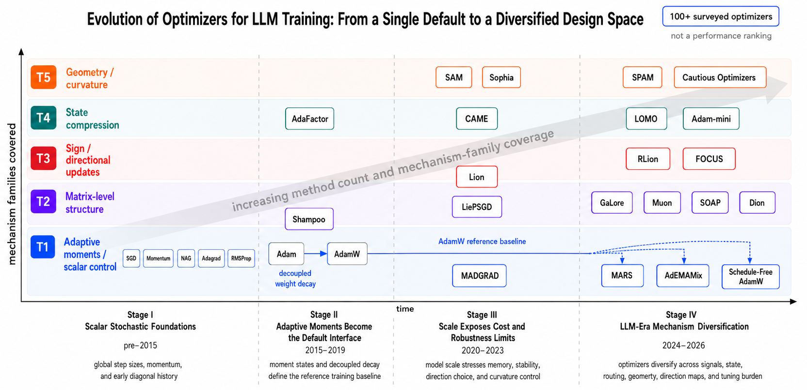
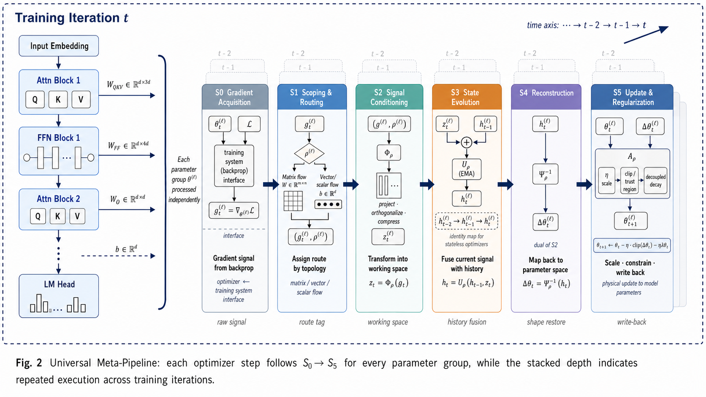
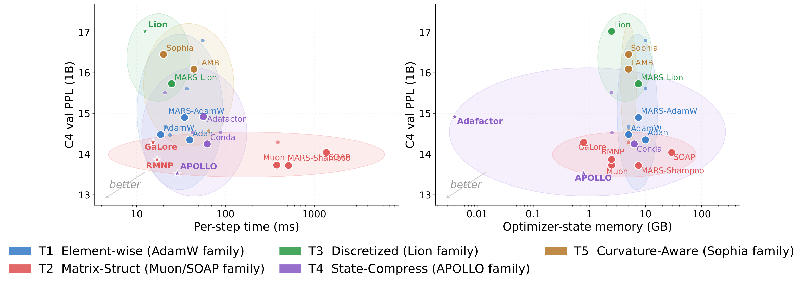
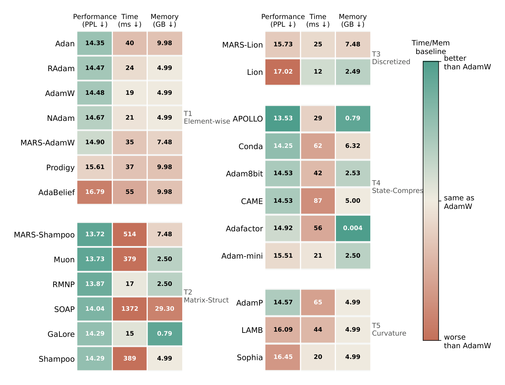
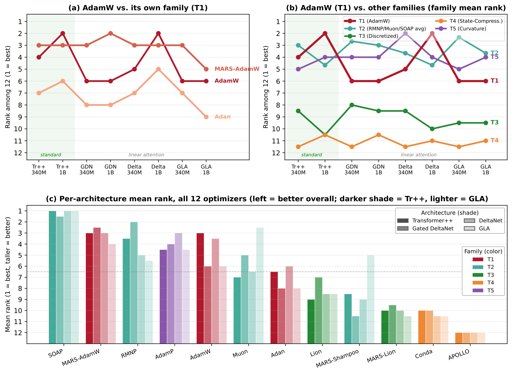
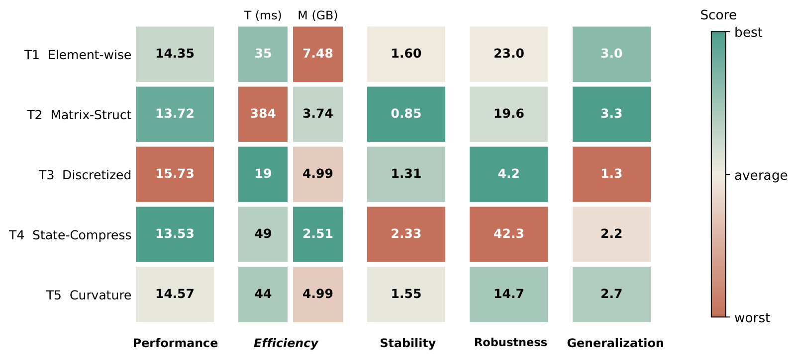
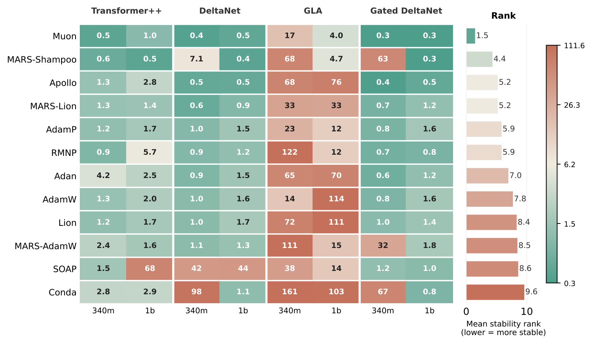
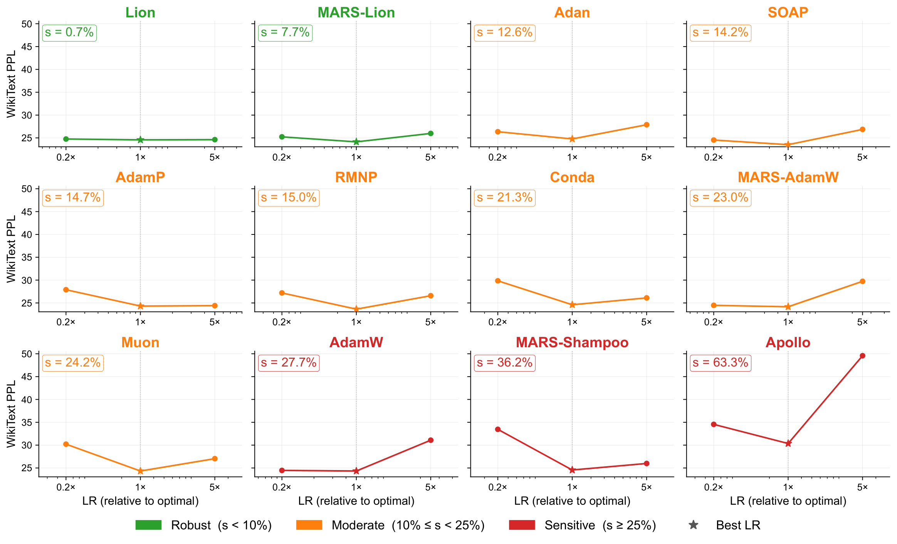
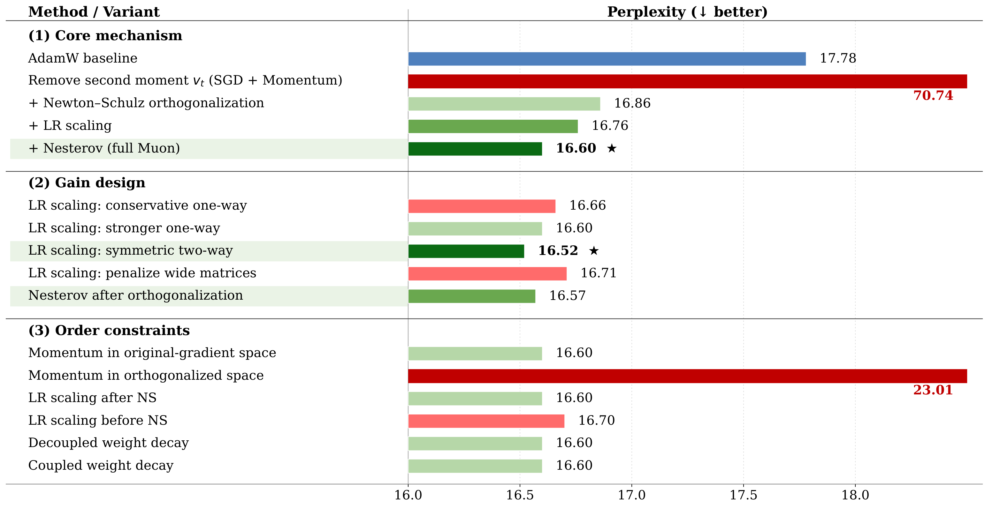

Scaling for Scaling
A unified meta-pipeline, LMO-grounded geometry, and cross-domain benchmark for choosing modern optimizers under compute, memory, stability, robustness, and generalization constraints.
1Shanghai Artificial Intelligence Laboratory · 2Shanghai University · 3Westlake University · 4Shanghai Jiao Tong University · 5UCAS · 6Zhejiang University · 7Southern University of Science and Technology

One optimizer step as a five-stage transformation.
The paper treats optimizers as structured transformations across parameter routing, gradient transformation, state evolution, update reconstruction, and finalization. Most methods do meaningful work in only one or two stages, making comparison and composition easier.

Signal acquisition
Receives first-order gradients, variance-reduced signals, or curvature-augmented estimates from the training system.
Parameter routing
Partitions tensors by shape and module type so matrices, vectors, heads, or layers can follow different update routes.
Gradient transform
Applies the mechanism that changes direction space: identity maps, sign maps, spectral orthogonalization, Kronecker transforms, or low-rank projection.
State evolution
Maintains moment, curvature, factorized, quantized, or variance-reduced states before a direction is formed.
Reconstruction
Returns transformed or compressed directions to the full parameter space through inverse rotations, projections, or approximations.
Finalization
Writes the update with learning rate, weight decay, clipping, trust ratios, masks, or sharpness-aware corrections.
Bridge to the LMO / four-axis geometry
The meta-pipeline locates where an optimizer intervenes. The geometric view explains what direction that intervention creates: state estimation happens before geometry, and the LMO or preconditioner consumes the estimated state to form the update.
Update domain
Where the update lives: full parameter space, matrix space, rotated coordinates, or a low-rank subspace.
State estimator
How momentum, second moments, Gram/Hessian proxies, variance reduction, and projection state are produced.
Geometry operator
How the state becomes a direction through an LMO constraint set or a Hessian-style preconditioner.
Finalization wrapper
How learning rate, decay, projection-back, routing fallbacks, refresh schedules, and clipping commit the direction.
| Method | Active stages | Core mechanism | Family | Pipeline constraint |
|---|---|---|---|---|
| AdamW | S3, S5 | First/second-order moment EMAs; decoupled weight decay | T1 | S2, S4 identity; S1 uniform element-wise |
| Muon | S1, S2 | Matrix routing; Newton-Schulz spectral orthogonalization | T2.1 | S4 trivial (dimension-preserving); S3 standard momentum |
| GaLore | S1-S4 | Low-rank projection; subspace Adam state; inverse projection | T2.3 | Dual S2/S4 via basis P_t; S5 standard |
| Lion | S2, S3 | Sign discretization of momentum-interpolated gradient | T3 | S4 identity; no second-order state; fixed-magnitude update |
| SAM | S0, S5 | Perturbation-induced gradient; neighborhood-regularized write-back | T5.1 | S1-S4 execute element-wise defaults |
Method families meet effect objectives.
The page preserves both taxonomy axes: mechanism families T1-T5 and effect objectives O1-O6. This is the map used to interpret benchmark tradeoffs rather than a leaderboard-only view.
Element-wise adaptive moment
Adam-style scalar control and moment estimation.
Matrix-structured methods
Spectral, Kronecker, and subspace update directions.
Discretized directions
Sign-like and quantized update geometry.
Compression and geometry
State reduction, curvature, perturbation, and trust-region controls.
| ID | Name | Definition | Data source | Extra cost | Typical outputs |
|---|---|---|---|---|---|
| O1 | Convergence Efficiency | Loss reduction or target-quality attainment under fixed step, token, wall-clock, or compute budget | Train/validation loss logs | None | Loss at step T; steps-to-threshold; token efficiency |
| O2 | Step cost | Extra optimizer computation, synchronization, or forward/backward cost relative to a baseline | Timers, profiler, analytic FLOP model | Recorded during training | Step time; optimizer FLOPs; extra backward count |
| O3 | Memory | Memory from optimizer states, gradient buffers, temporary factors, projection bases, and quantization buffers | Memory profiler, analytic byte model | Recorded during training | Peak memory; persistent state bytes; temporary buffer bytes |
| O4 | Stability | Robustness to spikes, divergence, overflow, and gradient fluctuations | Loss and gradient-norm time series | Offline post-processing | Spike frequency; gradient CV; divergence rate; completion rate |
| O5 | Hparam robustness | Sensitivity across learning rate, schedule, weight decay, momentum, batch size, and method-specific knobs | Multiple training runs | Search or transfer experiments | Acceptable LR interval; performance variance; tuning burden |
| O6 | Generalization | Quality outside the training objective, from validation to downstream, OOD, or scale-transfer evaluation | Validation, downstream, OOD, scale-transfer evaluation | Low for validation; high for full evaluation | Validation loss; train-val gap; downstream score; OOD retention |
| Family | O1 | O2 | O3 | O4 | O5 | O6 |
|---|---|---|---|---|---|---|
| T1 Element-wise adaptive moment and scalar control | ++ | 0 | - | + | + | 0/+ |
| T2 Matrix-level structural methods | ++ | - | -/0 | + | 0/+ | 0/+ |
| T3 Discretized directions | +/0 | + | + | +/0 | 0 | 0 |
| T4 State compression | 0/- | 0/+ | ++ | 0/- | 0 | 0/- |
| T5 Geometry regularization | +/0 | - | 0/- | ++ | + | ++ |
| Optimizer | Sub. | Axis I domain | Axis II state | Axis III LMO | Axis III precond. | Axis IV finalize | Pipeline stages |
|---|---|---|---|---|---|---|---|
| T1: Element-wise Adaptive Moment Estimation | |||||||
| AdamW | T1.1 | full | m_t,v_t | adapt.\ _ box | diag(v_t), 12 | LR + dec.\ WD | S3/S5 |
| RAdam | T1.1 | full | m_t,v_t rect. | adapt.\ _ box | diag(v_t), 12 | rect.\ warmup + WD | S3/S5 |
| NAdam | T1.1 | full | Nesterov m_t,v_t | adapt.\ _ box | diag(v_t), 12 | lookahead + WD | S3/S5 |
| AdaBelief | T1.1 | full | m_t, belief s_t | adapt.\ _ box | diag(s_t), 12 | LR + WD | S3/S5 |
| Adan | T1.1 | full | m_t,v_t grad-diff (VR) | adapt.\ _ box | diag(v_t), 12 | LR + WD | S3/S5 |
| MARS-AdamW | T1.2 | full | c_t,m_t,v_t (STORM) | adapt.\ _ box | diag(v_t), 12 | LR + dec.\ WD | S0/S3 |
| Prodigy | T1.3 | full | m_t,v_t,d_t | adapt.\ _ box | diag(v_t), 12 | auto-LR + WD | S3/S5 |
| T2: Matrix-Structured Methods | |||||||
| Muon | T2.1 | matrix (U,V) | M_t, H_t=M_tM_t^ | spectral polar UV^ | H_t, 12 | LR + matrix routing | S1/S2 |
| RMNP | T2.1 | matrix (row-wise) | M_t, H_t=diag(M_tM_t^) | row normalization | H_t, 12 | LR + matrix routing | S1/S2 |
| Shampoo | T2.2 | Kron (Q_L,Q_R) | m_t, Kron L_t,R_t | metric-ball steepest | Kron-Fisher, 14 | LR + damping | S1/S2/S3/S4 |
| SOAP | T2.2 | Kron eigen (Q_L,Q_R) | m_t,v_t, Kron | box in eigenbasis | rotated diag, 12 | LR + WD | S1/S2/S3/S4 |
| MARS-Shampoo | T2.2 | Kron (Q_L,Q_R) | c_t,m_t, Kron (STORM) | metric-ball (VR) | rotated diag, 12 | LR + damping | S0/S1/S2/S3/S4 |
| GaLore | T2.3 | subspace (Q_L,Q_R) | m_t, v_t (proj.) | projected adapt.\ box | diag( v_t), 12 | proj-back + WD | S2/S3/S4 |
| T3: Discretized & Quantized Directions | |||||||
| Lion | T3 | full | sign-mom.\ EMAs | fixed _ box | sign self-norm (I,0) | LR + WD | S2/S3 |
| MARS-Lion | T3 | full | c_t, sign-mom (STORM) | fixed _ box (VR) | sign self-norm (I,0) | LR + WD | S0/S2/S3 |
| T4: State-Compressed Optimization | |||||||
| Adafactor | T4.1 | full, factored | row/col 2nd-mom factors | adapt.\ coord box | factored diag, 12 | LR + factored upd. | S3 |
| CAME | T4.1 | full, factored | factors + confidence | adapt.\ coord box | factored diag + conf. | LR + conf.\ corr. | S3 |
| Adam8bit | T4.2 | full, INT8 state | quant.\ m_t,v_t | adapt.\ _ box | diag(v_t) INT8, 12 | dequant + WD | S3 |
| Adam-mini | T4.3 | block-struct. | block-shared m_t,v_t | block adapt.\ box | block-mean diag, 12 | LR + WD | S1/S3 |
| APOLLO | T4.3 | rand-proj state | projected estimator | projected adapt.\ box | proj.\ diag, 12 | proj-back + LR | S1/S3 |
| Conda | T4.3 | block-struct. | block-shared m_t,v_t | block adapt.\ box | block-mean diag, 12 | LR + WD | S1/S3 |
| T5: Curvature-Aware & Geometry-Regularized | |||||||
| Sophia | T5.2 | full | m_t, Hutch.\ HVP | clipped local geom. | Hutchinson, 1 | LR + WD | S3/S5 |
| AdamP | T5.3 | full | m_t,v_t | adapt.\ _ box | diag(v_t), 12 | radial proj. + WD | S5 |
| LAMB | T5.4 | full | m_t,v_t | adapt.\ _ box | diag(v_t), 12 | trust-ratio + WD | S1/S5 |
Cross-scenario evidence, not one-setting ranking.
The webpage foregrounds the evidence used by the paper's optimizer-choice argument: Stage-1 C4 quality/runtime/memory trade-offs, Stage-2 FineWeb-Edu long-context transfer, and auxiliary O4/O5 stability and robustness probes.

APOLLO, Muon, MARS-Shampoo, and RMNP are competitive on short-context C4, but they occupy different cost regions.
Lion and AdamW are cheap; RMNP is the practical matrix-structured exception close to the efficient frontier.
Adafactor, APOLLO, and GaLore reduce optimizer state, but memory wins do not automatically transfer to harder regimes.
FineWeb-Edu 32k turns optimizer choice into a cross-architecture stability question rather than an absolute PPL ranking.


No optimizer dominates every objective frontier.
Structured-matrix methods transfer stably but can be expensive; state-compressed methods can win memory under short contexts but degrade as input complexity grows; rankings cross systematically across domains.
Strongest long-context cross-scenario quality, but its runtime and optimizer-state memory make it a quality ceiling, not a default.
Matrix geometry is useful but architecture-aware: RMNP is the balanced option, while Muon is mechanistically interpretable.
State compression is attractive under memory pressure, but APOLLO's short-context win collapses under long context.
AdamW remains the stable reference anchor; Lion is cheap for exploration but carries an expected quality gap.




| Scenario | Standard Muon | Symmetric LR Scaling | Post-NS Nesterov | Both combined | Best config. |
|---|---|---|---|---|---|
| Standard Transformer: gains are stackable | |||||
| C4-LLaMA3, 350M | 16.60 | 16.52 | 16.57 | 16.51 | Both combined |
| C4-LLaMA3, 1B | 13.72 | 13.64 | 13.64 | 13.58 | Both combined |
| Linear attention: stacking effect disappears | |||||
| FineWeb-Edu-32k, GDN-340M | 24.26 | 24.02 | 24.12 | 24.12 | Symmetric LR Scaling |
Choose the optimizer by the binding constraint.
The paper's conclusion is not a single global winner. It is a constraint-matched decision rule: start from AdamW, then move only when quality, runtime, memory, stability, or cross-scenario transfer demands a different mechanism.
AdamW
Use as the default baseline for general-purpose LLM pretraining: stable, inexpensive, interpretable, and the reference every other optimizer should beat.
RMNP
Best practical alternative when a matrix-structured method is needed without the prohibitive runtime and memory cost of heavier preconditioners.
SOAP
Strongest long-context cross-architecture quality profile, useful when final quality dominates and compute/memory are not the bottleneck.
Muon
Strong and transparent matrix-structured optimizer, but its behavior is topology-dependent and should be validated on the target architecture.
Adafactor / APOLLO
Adafactor is the safer low-memory baseline. APOLLO is high reward but high risk: strong at short context, weak under long-context transfer.
Lion
Cheap exploratory option with low per-step overhead, but the paper treats the quality gap as expected rather than incidental.
| Tier | Optimizers |
|---|---|
| Tier I | Muon, RMNP, AdamW |
| Tier II | MARS-Lion, MARS-Shampoo, APOLLO, Conda, AdamP, MARS-AdamW, SOAP, Adan, Lion |
| Tier III | RAdam, NAdam, Prodigy, AdaBelief, GaLore, Shampoo, Adam8bit, CAME, Adafactor, Adam-mini, LAMB, Sophia |
Central benchmark tables are preserved in full.
Wide paper tables are rendered as responsive HTML tables with all source rows and columns. On narrow screens, rows turn into labeled cards instead of requiring horizontal scroll.
| Optimizer | Venue | 60M PPL | 60M Mem GB | 60M T ms | 130M PPL | 130M Mem GB | 130M T ms | 350M PPL | 350M Mem GB | 350M T ms | 1B PPL | 1B Mem GB | 1B T ms |
|---|---|---|---|---|---|---|---|---|---|---|---|---|---|
| Element-wise Adaptive Moment Estimation | |||||||||||||
| Adan | TPAMI'23 | 30.25 | 0.433 | 2.32 | 22.84 | 1.000 | 4.72 | 17.29 | 2.742 | 12.06 | 14.35 | 9.977 | 39.67 |
| RAdam | ICLR'20 | 30.12 | 0.217 | 1.53 | 23.22 | 0.500 | 3.07 | 17.34 | 1.371 | 7.64 | 14.47 | 4.989 | 23.79 |
| AdamW | ICLR'19 | 30.08 | 0.217 | 1.14 | 23.18 | 0.500 | 2.31 | 17.32 | 1.371 | 5.97 | 14.48 | 4.989 | 18.62 |
| NAdam | ICLR'18 | 33.72 | 0.217 | 3.45 | 24.51 | 0.500 | 4.93 | 17.90 | 1.371 | 9.96 | 14.67 | 4.989 | 20.91 |
| MARS-AdamW | ICML'25 | 30.01 | 0.325 | 7.62 | 22.86 | 0.750 | 11.05 | 16.95 | 2.057 | 22.12 | 14.90 | 7.483 | 34.70 |
| Prodigy | ICML'23 | 33.44 | 0.433 | 8.36 | 24.13 | 1.000 | 12.29 | 18.27 | 2.742 | 24.30 | 15.61 | 9.977 | 36.78 |
| AdaBelief | NeurIPS'20 | 30.08 | 0.433 | 5.76 | 23.45 | 1.000 | 8.55 | 17.61 | 2.742 | 19.10 | 16.79 | 9.977 | 55.48 |
| Matrix-Structured Methods | |||||||||||||
| MARS-Shampoo | ICML'25 | 30.03 | 0.325 | 26.27 | 22.56 | 0.750 | 37.94 | 16.82 | 2.057 | 78.71 | 13.72 | 7.483 | 513.7 |
| Muon | arXiv'25 | 28.26 | 0.109 | 21.01 | 21.81 | 0.250 | 30.48 | 16.61 | 0.686 | 61.66 | 13.73 | 2.495 | 379.0 |
| RMNP | ICML'26 | 29.88 | 0.109 | 3.26 | 22.54 | 0.250 | 4.63 | 16.85 | 0.686 | 9.32 | 13.87 | 2.495 | 16.94 |
| SOAP | arXiv'24 | 29.47 | 0.731 | 50.58 | 22.67 | 2.214 | 110.4 | 17.14 | 7.465 | 302.5 | 14.04 | 29.299 | 1371.5 |
| GaLore | ICML'24 | 34.56 | 0.062 | 4.21 | 25.32 | 0.199 | 5.88 | 19.18 | 0.426 | 11.85 | 14.29 | 0.790 | 15.29 |
| Shampoo | arXiv'18 | 30.22 | 0.217 | 22.36 | 22.56 | 0.500 | 33.27 | 17.03 | 1.371 | 66.05 | 14.29 | 4.989 | 389.4 |
| Discretized & Quantized Directions | |||||||||||||
| MARS-Lion | ICML'25 | 32.41 | 0.325 | 5.72 | 25.68 | 0.750 | 8.49 | 18.78 | 2.057 | 17.11 | 15.73 | 7.483 | 24.77 |
| Lion | arXiv'23 | 35.94 | 0.109 | 2.07 | 25.56 | 0.250 | 3.01 | 19.30 | 0.686 | 5.80 | 17.02 | 2.494 | 12.48 |
| State-Compressed Optimization | |||||||||||||
| APOLLO | MLSys'25 | 30.86 | 0.062 | 8.62 | 22.74 | 0.149 | 12.65 | 16.43 | 0.426 | 26.21 | 13.53 | 0.790 | 28.65 |
| Conda | arXiv'25 | 28.65 | 0.245 | 4.88 | 21.91 | 0.595 | 7.11 | 16.45 | 1.703 | 13.90 | 14.25 | 6.317 | 62.33 |
| Adam8bit | ICLR'22 | 30.46 | 0.110 | 4.11 | 23.30 | 0.254 | 7.27 | 17.67 | 0.697 | 16.89 | 14.53 | 2.534 | 42.38 |
| CAME | ACL'23 | 31.40 | 0.218 | 14.99 | 23.79 | 0.502 | 21.76 | 17.60 | 1.376 | 44.89 | 14.53 | 4.997 | 87.46 |
| Adafactor | ICML'18 | 30.00 | 0.001 | 9.90 | 22.94 | 0.002 | 14.63 | 17.85 | 0.003 | 29.70 | 14.92 | 0.004 | 56.46 |
| Adam-mini | ICLR'25 | 30.50 | 0.109 | 5.68 | 23.62 | 0.251 | 8.31 | 18.12 | 0.686 | 16.68 | 15.51 | 2.495 | 20.81 |
| Curvature-Aware & Geometry-Regularized | |||||||||||||
| AdamP | ICLR'21 | 30.21 | 0.217 | 12.82 | 23.07 | 0.500 | 19.13 | 17.39 | 1.371 | 39.98 | 14.57 | 4.989 | 64.69 |
| LAMB | ICLR'20 | 30.03 | 0.217 | 9.14 | 23.40 | 0.500 | 13.17 | 17.25 | 1.371 | 26.62 | 16.09 | 4.989 | 44.18 |
| Sophia | arXiv'23 | 36.27 | 0.217 | 3.92 | 25.76 | 0.500 | 5.66 | 18.86 | 1.371 | 11.06 | 16.45 | 4.989 | 20.05 |
Full Stage-1 C4 screening table: all optimizer families, four scales, and PPL/memory/runtime values are retained.
| Optimizer | Transformer++ 340M | Transformer++ 1B | Gated DeltaNet 340M | Gated DeltaNet 1B | DeltaNet 340M | DeltaNet 1B | GLA 340M | GLA 1B | Mean rank | Rank range |
|---|---|---|---|---|---|---|---|---|---|---|
| T1: Element-wise Adaptive Moment | ||||||||||
| MARS-AdamW | 24.57 | 18.94 | 24.17 | 20.04 | 26.79 | 20.67 | 28.28 | 21.89 | 3.12 | [2-5] |
| AdamW | 24.62 | 18.90 | 24.47 | 20.33 | 27.16 | 20.66 | 28.67 | 22.06 | 4.62 | [2-6] |
| Adan | 25.55 | 19.41 | 24.78 | 20.55 | 27.28 | 20.88 | 29.00 | 22.51 | 7.12 | [5-9] |
| T2: Matrix-Structured Methods | ||||||||||
| SOAP | 23.90 | 18.72 | 23.85 | 19.86 | 26.02 | 20.38 | 27.04 | 20.62 | 1.12 | [1-2] |
| RMNP | 24.37 | 19.40 | 23.65 | 20.26 | 26.80 | 21.06 | 28.60 | 22.23 | 4.00 | [1-7] |
| Muon | 25.05 | 19.86 | 24.34 | 20.32 | 27.18 | 21.18 | 27.47 | 21.54 | 5.25 | [2-8] |
| MARS-Shampoo | 26.43 | 19.74 | 25.99 | 24.87 | 28.26 | 21.25 | 29.20 | 21.53 | 8.25 | [2-11] |
| T3: Discretized Directions | ||||||||||
| Lion | 26.02 | 20.26 | 24.76 | 20.38 | 28.20 | 21.44 | 29.47 | 22.40 | 8.25 | [7-10] |
| MARS-Lion | 26.20 | 21.17 | 25.24 | 22.20 | 28.25 | 22.72 | 29.67 | 23.79 | 10.00 | [9-11] |
| T4: State-Compressed | ||||||||||
| Conda | 28.30 | 19.86 | 26.11 | 21.07 | 29.09 | 21.75 | 37.38 | 22.89 | 10.25 | [9-11] |
| APOLLO | 34.08 | 25.29 | 30.36 | 29.29 | 34.73 | 25.58 | 37.75 | 27.78 | 12.00 | [12-12] |
| T5: Curvature-Aware | ||||||||||
| AdamP | 24.68 | 19.04 | 24.32 | 20.29 | 26.77 | 20.68 | 28.66 | 21.86 | 4.00 | [2-5] |
Full Stage-2 long-context cross-architecture table with all eight scenario values and rank summaries.
BibTeX
@article{li2025scaling,
title = {{Scaling for Scaling: Taxonomy, Geometry, and Benchmarking of Modern Optimizers}},
author = {Siyuan Li and Jiabao Pan and Yumou Liu and Zhuoli Ouyang and Xin Jin and Xinglong Xu and Jingxuan Wei and Shengye Pang and Jintao Chen and Xuanhe Zhou and Conghui He and Cheng Tan},
year = {2025}
}